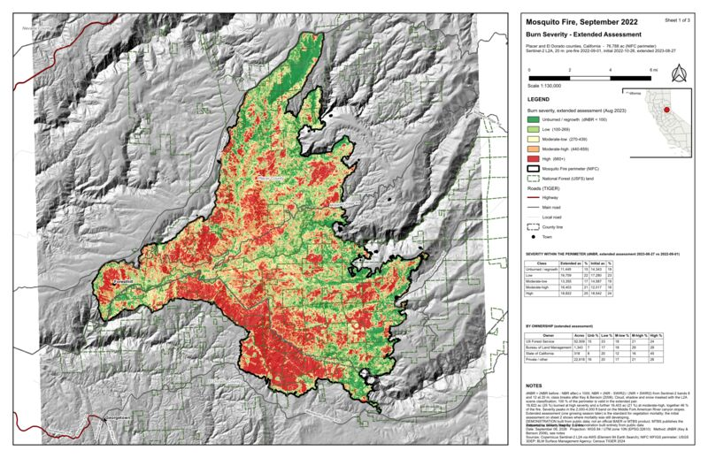

About
I am a forester and GIS analyst with more than eight years in the field and an M.S. in Forestry, based in Gold Run in the northern Sierra Nevada and eligible to sit for the California Registered Professional Forester (RPF) exam. My work has run from federal timber sale and community protection projects on the Plumas National Forest to timber sale layout and cruising across seven states, and from chainsaw fuels treatments to LiDAR-derived forest structure and terrain analysis in R and Python. I deploy ArcGIS Pro, Field Maps and Survey123 for field data collection, automate map production and spatial processing with ArcPy and lidR, and use AI-assisted development tools to build that automation faster. I am lead author of a published fire ecology study.
The four projects below are built on the same section of Nevada County timberland and one nearby fire, using only public data, so anyone can rerun them. Each one states what is measured and what is simulated. They are built in QGIS and PyQGIS, Python (pandas, GDAL, PDAL, GeoPandas), PostGIS and Excel; the same workflows run in ArcGIS Pro and ArcPy, which is where I did them professionally.
Professional Resume
Download resume (PDF, 2 pages)
Experience
- Write land management plans for private landowners, translating owner objectives into written prescriptions and treatment schedules.
- Perform the prescribed treatments personally: chainsaw and hand thinning, brush and invasive species control.
- Run business operations for the two-person firm: client acquisition, project scoping and invoicing.
- Supervised field crews of up to four across ~8,000 acres of the Plumas National Forest Community Protection Project, overseeing and analyzing 500+ plots and catching layout, marking and survey errors before they reached U.S. Forest Service (USFS) deliverables; implemented National Environmental Policy Act (NEPA) requirements and silvicultural prescriptions in the field, including unit layout for helicopter yarding.
- Led the transition from Avenza Maps Pro to ArcGIS Online, ArcGIS Pro, Field Maps and Survey123, authoring two technical guides and the training materials that drove adoption; eliminated manual re-keying of field data.
- Automated cartographic production and spatial data processing in Python and ArcPy; generated canopy height and digital terrain models (CHM, DTM) from LiDAR in R (lidR), with slope and terrain derivatives informing yarding system selection and harvest unit delineation.
- Developed R and lidR routines for individual tree crown delineation and canopy cover estimation as an open-source alternative to licensed processing software.
- Published and maintained 40+ hosted feature layers and geodatabases and managed offline map areas across three project areas for stream, inventory plot, archaeological and forest health surveys.
- Field liaison between JRC, USFS timber staff and National Forest Foundation partners; supported contract administration and best management practice compliance under a Registered Professional Forester.
- Completed M.S. thesis research and writing on fire return interval effects in East Texas upland pine ecosystems; relocated to California and secured forestry employment in-state.
- Laid out timber sales across seven states, from Rocky Mountain mixed conifer to Gulf Coastal Plain pine, with ground-based systems throughout and cable systems on steep terrain in California and Montana.
- Cruised timber by fixed-plot, variable-radius, strip and 100% methods, including 250+ plots personally run in eastern Oklahoma; compiled cruise data into volume summaries for appraisals, management plans and harvest scheduling.
- Marked timber to silvicultural prescriptions from ponderosa pine and mixed conifer to bottomland hardwood and shortleaf pine; coordinated with landowners, consulting foresters and logging contractors.
- Implemented fuel reduction prescriptions under an RPF with chainsaws, tow-chippers, tracked masticators and hand tools; built control lines to burn plan specifications and worked prescribed fire ignition, holding and mop-up.
- Instructed lab sections of 30–50 undergraduates per semester in Introduction to Forestry and Forest Biometrics: mensuration, sampling design and spatial analysis, with field trips.
- Assisted faculty during the six-week summer field station, staging equipment and tracking accountability for 100+ students in timber cruising, silviculture and management planning exercises.
- Operated a D5 bulldozer to construct control lines and suppress slopovers and spot fires during prescribed burns across East Texas pine plantations; drip-torch ignition, ATV line inspection and hand-tool suppression across multiple burn units.
Education
Thesis: Influence of Altered Fire Return Intervals on Plant Diversity in the East Texas Pineywoods. Xi Sigma Pi Forestry Honor Society.
Minor in Spatial Science, concentration in Fire Management. Coursework in forest biometrics, GIS and remote sensing, fire ecology, spatial science and silviculture.
Certifications & Qualifications
- California Registered Professional Forester (RPF), exam eligible (California Board of Forestry and Fire Protection)
- ISA Certified Arborist, exam eligible (International Society of Arboriculture)
- Qualified Timber Cruiser, U.S. Forest Service Region 3
- Tree Risk Assessment Qualification (TRAQ), International Society of Arboriculture
- CPR, current
Publication
Steinley, W. J., Oswald, B. P., Kidd, K. R., & Glasscock, J. (2024). Influence of altered fire return intervals on plant diversity in the East Texas Pineywoods. Journal of Forest Research, 13(5), 529. DOI 10.35248/2168-9776.24.13.529.
GIS Projects
Forestry geospatial work built from public data: harvest-plan map production, forest inventory analysis, LiDAR stand structure and post-fire remote sensing, plus the tools behind them.

Timber Harvesting Plan Map Packet — North Fork Deer Creek
A five-sheet THP map set for a 624-acre private timberland section in Nevada County, California, built entirely from public data (USGS 3DEP and NHD, BLM PLSS and ownership, NAIP imagery, OpenStreetMap). Watercourses are classified from NHD flow regime and buffered per 14 CCR 916.5 by side slope; harvest units, landings and crossings are derived from slope, protection zones and the existing road network. The whole packet is reproducible from three Python scripts run through QGIS.


Demonstration project: no field work, watercourse classes and prescriptions are provisional. Not a proposal for the actual landowner.

Forest Inventory Analysis & Dashboard — North Fork Deer Creek
A full cruise-to-report workflow on the seven harvest units of the THP above: a BAF 20 cruise on a 400 ft grid (142 plots, 534 acres), field-data QC that catches six planted recording errors, stand metrics (basal area, QMD, summation-form SDI against the FVS Western Sierra maximum), Scribner volume, 95 % sampling statistics with plots-needed, and a simulated marking with pre/post structure and harvest volume. Cruise data are simulated and labeled as such; everything else is the real workflow.


Demonstration project: the cruise data are simulated; the plan area, units and terrain are real public data.

LiDAR Canopy Height & Stand Structure — North Fork Deer Creek
116 million points of USGS 3DEP LiDAR (2022, QL1) over the same section, processed with a streaming PDAL pipeline into a 3 ft canopy height model, then into tree tops (variable-window local maxima with modelled crowns), canopy cover, dominant height, tree-top density and rumple grids, and per-unit and per-plot structure metrics at the piece 2 cruise plots. Plan area: 93 % canopy cover, 95th-percentile height 128 ft, 22,744 tree tops detected. Everything here is measured from real data.


The LiDAR and every metric are real; the THP plan and units are the illustrative set from the map packet.

Burn Severity Mapping — Mosquito Fire, 2022
Sentinel-2 differenced Normalized Burn Ratio for the 76,788-acre Mosquito Fire in Placer and El Dorado counties, read as windowed cloud-optimized GeoTIFFs straight from AWS. Standard Key & Benson classes with scene-classification masking, an initial (7-week) versus extended (one-year) comparison that quantifies delayed mortality, severity by ownership, elevation, aspect and slope, and a high-severity patch and seed-source distance analysis for reforestation planning. 25 % of the fire (18,822 acres) burned at high severity; 26 % of that is more than 500 ft from surviving canopy.
Demonstration from public data; not an official BAER or MTBS product.
Forest Inventory Analyzer
A command-line and web-UI cruise compiler written in Rust: reads CSV, JSON and Excel plot data and produces trees per acre, basal area, cubic and board-foot volume, QMD, species composition, diameter distributions, sampling statistics with confidence intervals, and growth projections. Ships as a Windows installer with CI builds.
PostgreSQL / PostGIS GIS Server
A self-hosted spatial database stack (PostgreSQL 16 with PostGIS, pgAdmin, Grafana and Prometheus monitoring) in Docker, with nightly encrypted dumps and off-site copies. Used for geodatabase design, spatial SQL and serving project layers to QGIS and ArcGIS Pro.
Private repository; walkthrough available on request.
Technical Skills
Forestry & Field Operations
GIS & Spatial Science
Programming & Data
Get In Touch
Open to forester and GIS analyst roles in northern California and remote geospatial work, and to consulting on inventory, LiDAR and harvest-plan mapping. Based in Gold Run, California.